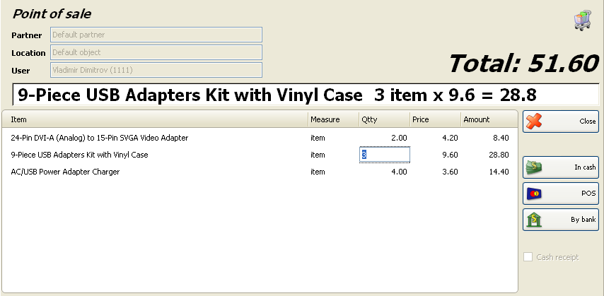

POS
Fereastra POS este un modul specializat de comercializare. In mare este similar cu modulul Vanzare, dar solicita specificatii detaliate si lucru mai rapid.
Pentru a completa fereastra se efectueaza urmatorii pasi:
Campurile Partner, Localizare si Utilizator �sunt completate numai daca raman completate dupa ce operatia a fost salvata. Aceasta optimizeaza lucrul in localizarea respectiva deoarece nu este necesara introducerea acestor informatii la fiecare client.
In campul Partner
completeaza numele clientului / companiei de unde sunt cumparate articolele.
field fill in the name of the customer/company, buying the items.
Pentru a selecta un partener efectuati una din urmatoarele operatii:
- apasati tasta F4 in campul de parteneri pentru afisare lista
parteneri;
- apasati tasta Enter in lista de parteneri dupa selectarea unui
partener;
- dublu-click pe partener in lista de parteneri;
- introduceti numele partenerului in campul respectiv;
- introduceti codul partenerului in campul respectiv.
In campul Localizare
completati numele sau codul unei localizari de unde se va efectua vanzarea
respectiva.
Pentru a selecta localizarea efectuati una din urmatoarele operatii:
- apasati tasta F4 in campul de localizare pentru afisare lista de
localizari;
- apasati tasta Enter in campul de localizare pentru afisare lista de
localizari;;
- dublu-click pe localizare in lista de localizari;
- introduceti numele localizarii in campul respectiv;
- introduceti codul localizarii in campul respectiv.
In campul Utilizator
completati numele angajatului care va efectua vanzarea.
Pentru a selecta un utilizator efectuati una din urmatoarele operatii:
- apasati tasta F4 in campul de utilizatori pentru afisare lista
utiliatori;
- apasati tasta Enter in campul de utilizatori pentru afisare lista
utiliatori;
- dublu-click pe utilizator in lista de utilizatori;
- introduceti numele utilizatorului in campul respectiv;
- introduceti codul utilizatorului in campul respectiv.
- introduceti codul articolului in campul respectiv.
In campul Data completati
data curenta a documentului.
Selectati data in fereastra Calendar prin apasarea tastei F4
in campul de data si efectuati dublu-click pe data corecta din
fereastra.(fereastra Calendar se va inchide automat).
In campul Articol
completati articolul care se va vinde.
Pentru a selecta articolul efectuati una din urmatoarele operatii:
- apasati tasta F4 in campul de articole pentru afisare lista de
articole;
- apasati tasta Enter in campul de articole pentru afisare lista de
articole;
- dublu-click pe articol in lista de articole;
- introduceti numele articolului in campul respectiv;

Daca doriti sa selectati mai mult de un articol, deschideti lista de articole prin apasarea taestei F4 in campul de articole, apasati si mentineti apasata tasta Ctrl si click pe articolele dorite a fi selectate. Pentru selectarea mai multor articole consecutive mentineti tasta Shift apasata si folositi tastele sageata sus / jos pentru selectare.
Dupa selectarea unui articol trebuie introdusa cantitatea. In coloana Cant completati cantitatea care se vinde si apasati tasta Enter pentru a va muta in coloana urmatoare. In coloana Pret completati (daca nu se accepta pretul programat) pretul de vanzare si apasati tasta Enter pentru a va muta in coloana urmatoare. Aplicatia va completa automat in coloana Valoare. Folositi aceeasi metoda pentru a introduce toate articolele care se vor vinde pentru clientul ales.
Dupa introducerea tuturor articolelor cumparate de client, apasati tasta F9 pentru a salva vanzarile si a introduce forma de plata.
Introduceti valoarea primita de la client, alegeti forma de plata folosita de c lient si apasati tasta Enter sau click pe butonul OK. In acest moment se va finaliza vanzarea prin tiparirea bonului fiscal!
Pentru a sterge operatia apasati Esc inainte de apasarea tastei F9, altfel nu se mai poate sterge operatia de vanzare!
�2006-2012 Microinvest, All rights reserved